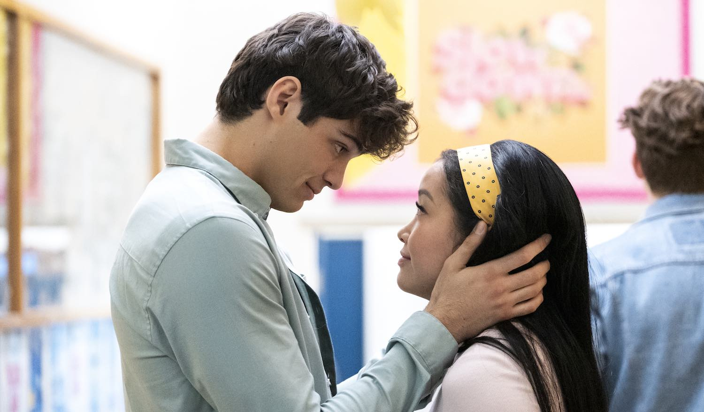
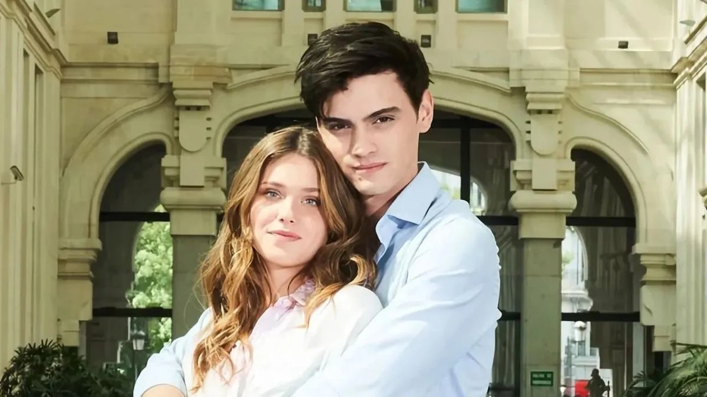

Las peliculas y series de streaming a menudo presentan el amor romántico como algo mágico, inevitable, y siempre feliz. Se enfatiza la idea del "alma gemela", un destino preordenado que garantiza una relación perfecta y sin conflictos. Esta representación puede tener consecuencias negativas, ya que crea expectativas poco sanas para las relaciones.
- Idealización Excesiva: Las producciones de streaming a menudo presentan relaciones perfectas e ideales, ignorando los conflictos, las dificultades y el trabajo constante que implica cualquier relación real. Esto crea una expectativa irreal de que el amor debe ser facíl y sin problemas.
- Dependencia Emocional: Muchas historias refuerzan la idea de que el amor romántico es la fuente principal de felicidad y significado en la vida, lo que puede fomentar la dependencia y la falta de autonomía personal.
- Estereotipos de Género: Las representaciones tradicionales del "amor romántico" a menudo mantienen roles de género estreotipados, donde la mujer es pasiva y dependiente, y el hombre es protector y dominante.
- Obsesión y Possesividad: El amor romántico a veces se confunde con obsesión y posesividad,presentando como "amor verdadero" comportamientos controladores o incluso abusivos
Aunque la mayoría de las producciones de streaming siguen mantienen el "amor romántico" idealizando, algunas comienzan a cuestionarlo. Algunas series y películas muestran relaciones complejas, con conflictos y crecimiento personal, ofreciendo una visión más realista del amor y las relaciones. Estas producciones suelen explorar temas como la comunicaación, el respeto mutuo, la independencia emocional y la importancia de la amistad y el amor propio. La clave está en identificar las producciones que se alejan de los clichés y ofrecen una visión más crítica y matizada del amor
Decontruyendo el "amor romantico"
La decontrucción del amor romantico en películas y series de streaming es una tendencia creciente que cuestiona las narrativas tradicionales del romance. En lugar de presentar relaciones idealizadas y perfectas, estas producciones exploran las complejidades,las imperfecciones y las posibles consecuencias negativas del amor romántico, ofreciendo una visión más crítica y realista.
- Cuestionamiento de los estereotipos: Se desafían las ideas preconcebidas sobre el amor, como la idea del "principe azul"o la "media naranja". Las producciones muestran relaciones donde los personajes no encajan en roles de género tradicionales y donde el amor no siempre es suficiente para resolver todos los problemas.
- Exploración de las relaciones tóxicas: Se muestra con honestidad la dinámica de relaciones abusivas, codependientes o desequilibradas, desmitificando la idea de que el amor siempre es positivo y saludable. Se explora el daño emocional y psicológico que estas relaciones pueden causar.
- Énfasis en la individualidad: Se prioriza el desarrolo personal y la independencia de los personajes, mostrando que el amor no debe ser el único objetivo en la vida más amplio, no como su centro absoluto.
- Finales no convecionales: Se abandonan los finales felices tradicionales. Las historias pueden concluir con separaciones, relaciones abiertas o la aceptación de la soledad como una opción válida, reflejando la realidad de que las relaciones no siempre funcionan.
- Crítica social: Algunas producciones utilizan la decontrucción del amor romántico para criticar estructuras sociales patriarcales o normas culturas que limitan las relaciones amorosas.
Analisis sobre la película. A través de mi ventana:
Esta película no es la típica "relación perfecta" podemos observar muchos de los ítems mencionados anteriormente como "dependencia emocional", desde el principio por parte de la protagonista principal (raquel) y a medida que la película avanza también por parte del otro protagonista principal (Ares). Cuando vez la pélicula por primera vez no te das cuenta la cantidad de "red flag" que tienen los dos personajes, hasta que la volves a ver y hay si te das cuenta de muchas situaciones y actitudes que no están bién, como "estereotipos de género" donde ella sabe que muchas actitudes o situaciones no concuenderdan con sus palabras, el dice "amarla" mientrás la lastima o hace sentir mal y ella lo perdona y se olvida de todo, mientrás su relación con sus amigos o personas que la quieren va disminuyendo, ya que al estar completamente enamorada no se da cuenta de cosas que ellos si. Pero no toda la culpa es de el, ya que el creció viviendo así, su papá le puse en la cabeza que el amor "no era para los hidalgo" pero a pesar de eso el rompio con los "estereotipos" de su familia y aposto al amor.Y la manera de amar de ella es muy intensa, tanto que a veces le exigia cosas a la que el no estaba acostumbrado, queriendo que sea todo ya, sin esperar sus tiempos, muchas veces fue histerica e inmadura